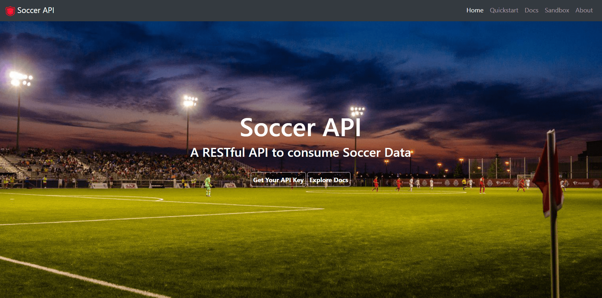

About

Who am I?
I'm a full stack developer from Bangalore, India. I've been developing amazing web applications and services for as long as I can remember.
I have a serious interest in application development and intriguing projects.
How to contact me?
If you have any question or want to work together, feel free to contact me.
E-Mail: sanjayb.shanbhag@gmail.com
Ph.No: +91-8073997398
Projects



APOD
PHP, Javascript

Astronomy Picture of The Day
ScienceAPOD is a Progressive Web Application that shows the NASA's Astronomy picture of the day in a beautiful way. Also, if any image catches your eye, then you may save it in the application to view it at anytime, even without an internet connection.
| Visit Site | Learn More |